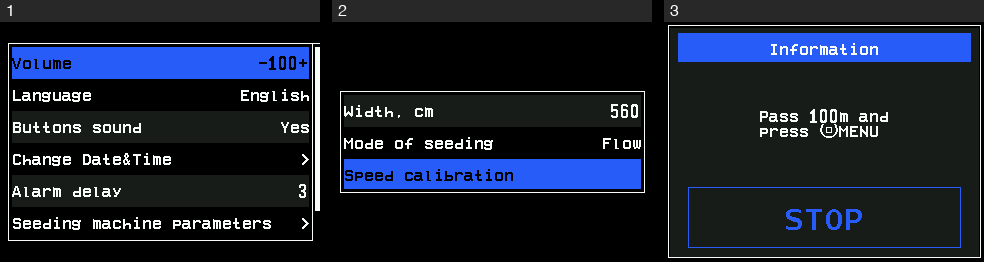

Étalonner le capteur de vitesse
Parcourez 100 m balisés pour que le Hectare Mini corrige le facteur du capteur de vitesse d'avancement — à lancer depuis les paramètres du semoir ou depuis le menu contextuel du capteur.
L'étalonnage mesure la distance que le boîtier compte sur 100 m balisés et corrige « Factor, % » (facteur) du capteur de vitesse. Effectuez-le avant le premier semis et après toute modification de la roue ou de son entraînement. Réglez d'abord « Pulses » (impulsions) et « Diameter, cm » (diamètre, cm) (Capteur de vitesse d'avancement) — l'étalonnage corrige le facteur ; il ne peut pas remplacer un nombre d'impulsions erroné.
Balisez 100 m sur un sol plat, aussi proche que possible des conditions du champ, et placez la machine au départ.
Depuis les paramètres du semoir
Passez au niveau « Agronomist » (agronome) (Activer le niveau Agronomist).
« Settings » (réglages) → « Seeding machine parameters » (paramètres du semoir), sélectionnez « Speed calibration » (étalonnage de la vitesse) et appuyez sur « MENU ».

Le chemin vers l'étalonnage : le menu Settings et les paramètres du semoir, puis la fenêtre d'étalonnage. Le boîtier affiche « Pass 100m and press MENU » (parcourez 100 m et appuyez sur MENU) avec un bouton « STOP ». Parcourez la distance balisée et arrêtez-vous à la fin.
Appuyez sur « MENU » ou touchez « STOP ». Le boîtier affiche « Done » (terminé) et ferme la fenêtre de lui-même.
Depuis le menu contextuel du capteur de vitesse
Maintenez « MENU » enfoncé sur l'écran d'accueil, sélectionnez l'indicateur de vitesse, appuyez sur « MENU ». Le menu contextuel s'ouvre.
Sélectionnez « Speed calibration » et appuyez sur « MENU ». La rubrique n'est affichée que machine à l'arrêt.
Au niveau « Operator » (opérateur), le clavier de saisie du code PIN s'ouvre : saisissez le code PIN du niveau Agronomist ou Service. Au niveau « Agronomist », le boîtier demande « Are you sure? » (êtes-vous sûr ?) — appuyez sur « PLUS » pour « Yes » (oui).

L'étalonnage depuis le menu contextuel : la rubrique, la demande de code PIN au niveau Operator, la fenêtre d'étalonnage. Poursuivez comme aux étapes 3 et 4 ci-dessus.
Le code PIN saisi ici lance cet étalonnage uniquement ; le niveau d'accès reste inchangé.
Pendant l'étalonnage, l'application du produit est verrouillée ; elle retrouve son état d'avant l'étalonnage à la fermeture de la fenêtre. Le boîtier attend une demi-seconde après « STOP » et vérifie encore une fois la liaison avec le capteur avant de prendre le résultat.
En cas d'échec
| Le boîtier affiche | Signification |
|---|---|
| « No speed sensor » (pas de capteur de vitesse) | Le profil ne contient aucun capteur de vitesse. L'étalonnage ne démarre pas. |
| « Connection lost with the sensor! Calibration canceled! » | Le capteur ne répond pas — au démarrage ou au moment de « STOP ». |
| « Sensor not controlled! Calibration canceled! » | Le capteur de vitesse est hors surveillance. |
| « FAILURE! The tractor did not move! » | Le capteur n'a donné aucune impulsion sur toute la distance. Contrôlez le capteur, son entrefer par rapport à la cible et son câble. |
| « Calibration canceled! » | La fenêtre a été fermée avec « BACK » ou par un toucher à l'extérieur. Rien n'a changé. |
| « Invalid PIN » | Le code PIN demandé au niveau « Operator » était erroné. L'étalonnage ne démarre pas. |
Si, après l'étalonnage, la vitesse du boîtier diffère encore de la vitesse réelle, contrôlez « Pulses » et « Diameter, cm » et étalonnez de nouveau.
Votre machine fait quelque chose que cette page n'explique pas ? Écrivez à support@agriwelt.com — un ingénieur vous répond.